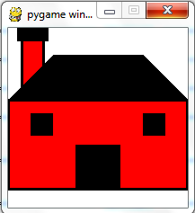
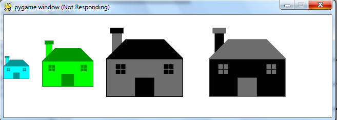

4. Creating Functions For World Domination¶
4.1. Creating Functions¶
We have seen how to call functions in order to create interesting pictures. Now we will stride forth to create our own functions. When we create and use functions, we decrease the amount of code that we have to write, decrease the number of errors we will make, and increase the readability of the code. All in all, functions are pretty cool!
Creating a function is called Defining a Function. The syntax for a function definition is:
def NAME( PARAMETERS ): STATEMENTS
You can make up any names you want for the functions you create, except that you can’t use a name that is a Python keyword, and the names must follow the rules for legal identifiers. The parameters specifies what information, if any, you have to provide in order to use the new function.
There can be any number of statements inside the function, but they have to be indented from the def. In the examples in this book, we will use the standard indentation of four spaces. Function definitions are the first of several control structures we will see, all of which have the same pattern:
- A header line which begins with a keyword and ends with a colon.
- A body consisting of one or more Python statements, each indented the same amount – 4 spaces is the Python standard – from the header line.
In a function definition, the keyword in the header is def, which is followed by the name of the function and some parameters enclosed in parentheses. The parameter list may be empty, or it may contain any number of parameters separated from one another by commas. In either case, the parentheses are required.
4.1.1. Functions without Parameters¶
Functions without a parameter are the simplest to construct. Since they take no inputs, they will usually perform the same actions each time they are called. The following function provides a well deserved cheer for the caller.
docstrings
If the first thing after the function header is a triple-quoted string, it is called a docstring and gets special treatment in Python and in some of the programming tools. For example, when using IDLE, when you type a function name it will pop up a tooltip showing the parameters of the function, and the text from the docstring.
Another way to retrieve this information is to use the interactive interpreter, and enter the expression <function_name>.__doc__, which will retrieve the docstring for the function. So the string you write as documentation at the start of a function is retrievable by python tools at runtime. This is different from comments in your code, which are completely eliminated when the program is parsed.
By convention, Python programmers use docstrings for the key documentation of their functions.
4.1.2. Functions with Parameters¶
Functions are more flexible when they have parameters. Parameters serve as variables to store the arguments that are used when the function is called. This means that when we define a function, we do not know what the value of those parameters will be, but we know that the parameters will have a value when they are used.
The following function is used to print the sum of two parameters. It is called adder.
To call this function we need to provide arguments in our functions call. Below we see that values can be used directly (line 1), through the use of variables (line 5) or some combination of the two (line 8).
Have Faith
Many novice programmers have a crisis of faith when they are defining functions. Novice programmers look at those parameters and will often make the following move of desperation.
def adder(number1,number2):
"""prints the sum of number1 and number2"""
number1=5 #NO!!!
number2=10 #NO AGAIN!
total = number1 + number2
print("The total is",total)
You see, the parameters are just variables. Parameter values are set when the function is called. By artificially providing values, this function is in effect ignoring the input. Whenever you feel panic that you don’t know the value of a parameter, take a deep breath and have faith that whoever calls your function will provide the values for your parameters.
4.2. Functions that return values¶
Functions that return values are called fruitful functions in this course. In many other languages, a chunk that doesn’t return a value is called a procedure, but we will stick here with the Python way of also calling it a function, or if we want to stress it, a non-fruitful function. (Would the term barren function be easier?)
The first example is area, which returns the area of a circle with the given radius:
We have seen the return statement before, but in a fruitful function the return statement includes a return value. This statement means: evaluate the return expression, and then return it immediately as the result (the fruit) of this function. The expression provided can be arbitrarily complicated, so we could have written this function like this:
On the other hand, temporary variables like b above often make debugging easier.
4.2.1. Fruit of our Labors¶
In the exercises at the end of chapter 2 we saw the standard formula for compound interest, which we’ll now write as a fruitful function:

The return statement is followed an expression which is evaluated. Its result is returned to the caller as the “fruit” of calling this function.
We prompted the user for the principal amount. The type of toInvest is a string, but we need a number before we can work with it. Because it is money, and could have decimal places, we’ve used the float type converter function to parse the string and return a float.
Notice how we entered the arguments for 8% interest, compounded 12 times per year, for 5 years.
When we run this, we get the output
At the end of the period you’ll have R 14898.457083
This is a bit messy with all these decimal places, but remember that Python doesn’t understand that you’re working with money: it just does the calculation to the best of its ability, without rounding. Later we’ll show you how to format the string that is printed in such a way that it does get nicely rounded to two decimal places before printing.
The line toInvest = float(input(“How much do you want to invest?”)) also shows yet another example of composition — we can call a function like float, and its arguments can be the results of other function calls (like input) that we’ve called along the way.
Notice something else very important here. The name of the variable we pass as an argument — toInvest — has nothing to do with the name of the parameter — p. It is as if p = toInvest is executed when final_amt is called. It doesn’t matter what the value was named in the caller, in final_amt it’s name is p.
These short variable names are getting quite tricky, so perhaps you’d prefer one of these versions instead:
They all do the same thing. Use your judgment to write code that can be best understood by other humans!
4.3. Variables and parameters are local¶
When you create a local variable inside a function, it only exists inside the function, and you cannot use it outside. For example, consider again this function:
If we try to use a, outside the function, we’ll get an error:
>>> a NameError: name 'a' is not defined
The variable a is local to final_amt, and is not visible outside the function.
Additionally, a only exists while the function is being executed — we call this its lifetime. When the execution of the function terminates, the local variables are destroyed.
Parameters are also local, and act like local variables. For example, the lifetimes of p, r, n, t begin when final_amt is called, and the lifetime ends when the function completes its execution.
So it is not possible for a function to set some local variable to a value, complete its execution, and then when it is called again next time, recover the local variable. Each call of the function creates new local variables, and their lifetimes expire when the function returns to the caller.
4.4. Flow of execution¶
In order to ensure that a function is defined before its first use, you have to know the order in which statements are executed, which is called the flow of execution. We’ve already talked about this a little in the previous chapter.
Execution always begins at the first statement of the program. Statements are executed one at a time, in order from top to bottom.
Function definitions do not alter the flow of execution of the program, but remember that statements inside the function are not executed until the function is called. Although it is not common, you can define one function inside another. In this case, the inner definition isn’t executed until the outer function is called.
Function calls are like a detour in the flow of execution. Instead of going to the next statement, the flow jumps to the first line of the called function, executes all the statements there, and then comes back to pick up where it left off.
That sounds simple enough, until you remember that one function can call another. While in the middle of one function, the program might have to execute the statements in another function. But while executing that new function, the program might have to execute yet another function!
Fortunately, Python is adept at keeping track of where it is, so each time a function completes, the program picks up where it left off in the function that called it. When it gets to the end of the program, it terminates.
What’s the moral of this sordid tale? When you read a program, don’t read from top to bottom. Instead, follow the flow of execution.
4.5. Program development¶
At this point, you should be able to look at complete functions and tell what they do. Also, if you have been doing the exercises, you have written some small functions. As you write larger functions, you might start to have more difficulty, especially with runtime and semantic errors.
To deal with increasingly complex programs, we are going to suggest a technique called incremental development. The goal of incremental development is to avoid long debugging sessions by adding and testing only a small amount of code at a time.
As an example, suppose you want to find the distance between two points, given by the coordinates (x1, y1) and (x2, y2). By the Pythagorean theorem, the distance is:

The first step is to consider what a distance function should look like in Python. In other words, what are the inputs (parameters) and what is the output (return value)?
In this case, the two points are the inputs, which we can represent using four parameters. The return value is the distance, which is a floating-point value.
Already we can write an outline of the function that captures our thinking so far:
Obviously, this version of the function doesn’t compute distances; it always returns zero. But it is syntactically correct, and it will run, which means that we can test it before we make it more complicated.
To test the new function, we call it with sample values:
>>> distance(1, 2, 4, 6) 0.0
We chose these values so that the horizontal distance equals 3 and the vertical distance equals 4; that way, the result is 5 (the hypotenuse of a 3-4-5 triangle). When testing a function, it is useful to know the right answer.
At this point we have confirmed that the function is syntactically correct, and we can start adding lines of code. After each incremental change, we test the function again. If an error occurs at any point, we know where it must be — in the last line we added.
A logical first step in the computation is to find the differences x2- x1 and y2- y1. We will store those values in temporary variables named dx and dy.
If we call the function with the arguments shown above, when the flow of execution gets to the return statement, dx should be 3 and dy should be 4.
Next we compute the sum of squares of dx and dy:
Again, we could run the program at this stage and check the value of dsquared (which should be 25).
Finally, using the fractional exponent 0.5 to find the square root, we compute and return the result:
If that works correctly, you are done. Otherwise, you might want to inspect the value of result before the return statement.
When you start out, you might add only a line or two of code at a time. As you gain more experience, you might find yourself writing and debugging bigger conceptual chunks. Either way, stepping through your code one line at a time and verifying that each step matches your expectations can save you a lot of debugging time. As you improve your programming skills you should find yourself managing bigger and bigger chunks: this is very similar to the way we learned to read letters, syllables, words, phrases, sentences, paragraphs, etc., or the way we learn to chunk music — from individual notes to chords, bars, phrases, and so on.
The key aspects of the process are:
- Start with a working skeleton program and make small incremental changes. At any point, if there is an error, you will know exactly where it is.
- Use temporary variables to hold intermediate values so that you can easily inspect and check them.
- Once the program is working, relax, sit back, and play around with your options. (There is interesting research that links “playfulness” to better understanding, better learning, more enjoyment, and a more positive mindset about what you can achieve — so spend some time fiddling around!) You might want to consolidate multiple statements into one bigger compound expression, or rename the variables you’ve used, or see if you can make the function shorter. A good guideline is to aim for making code as easy as possible for others to read.
Here is another version of the function. It makes use of a square root function that is in the math module (we’ll learn about modules shortly). Which do you prefer? Which looks “closer” to the Pythagorean formula we started out with?
4.6. Composition - functions can call another function¶
As you should expect by now, you can call one function from within another. This ability is called composition.
As an example, we’ll write a function that takes two points, the center of the circle and a point on the perimeter, and computes the area of the circle.
Assume that the center point is stored in the variables xc and yc, and the perimeter point is in xp and yp. The first step is to find the radius of the circle, which is the distance between the two points. Fortunately, we’ve just written a function, distance, that does just that, so now all we have to do is use it:
The second step is to find the area of a circle with that radius and return it. Again we will use one of our earlier functions:
Wrapping that up in a function, we get:
We called this function area2 to distinguish it from the area function defined earlier. There can only be one function with a given name within a module.
The temporary variables radius and result are useful for development, debugging, and single-stepping through the code to inspect what is happening, but once the program is working, we can make it more concise by composing the function calls:
4.7. Refactoring Rules for Functions¶
Let us create a function to draw a house. We will start simply and demonstrate how the to incrementally improve the function as we work toward a robust solution. This process of rearrangement is called refactoring. The trick about refactoring code is to see which things you are likely to want to change each time you call the function: these should become the parameters, or changeable bits, of the functions you write.
Here are four guidelines about when it is a good time to create a function. These rules are not ironclad and part of becoming an experienced programmer will be determining when to bend these rules.
- All code should be in a function.
- No functions should be over a page.
- Functions should be used to make the program easier to understand.
- Functions should be used when there is repetition.
We will start with a program that draws a house. This program follows the first rule in that all code is in a function.

4.7.1. Using Functions to Aid Understanding¶
We have taken a first stab at a program that will draw a house to the screen. We have put all of the code into one function, so we have satisfied the first rule. However we find that we are in violation of the second rule, the code is over a page. Humans are not able to keep track of more that 3-7 things at a time. When you have a long section of code, humans need to reread the code, often, in order to figure out what is going on. If you can’t see all of the function at once, it will be difficult to get it right.
We need to break up the longer function into smaller functions. The question is where should we break the code up? At the top level this code does two things: handling the window and drawing the house. Like paragraphs in English text, which only have one thought, a function should only do one thing. So we will break this up into two functions.
4.7.2. Adding Parameters to Enable Repetition¶
This was a good improvement. We can see flow of the program inside of main without straining too much. In particular, look for places where we could refactor to improve reuse and to avoid repetition. In drawHouse() there are two opportunities to make use of parameters in our functions. The simplest improvement is that we can add parameters to customize the colors of the house. By making mainColor and trimColor parameters, I do not need to write a new function if I ever want to create a different colored house. Since they are no longer constants, I have changed them to lower case below.
The second improvement comes from looking at lines 10-11 and lines 14-15. Here are two places that we create a bordered rectangle effect, the only differences are where the rectangle is drawn and how wide the border is. This is a good opportunity to introduce a new function. I will create a helper function called drawBorderedRect. The parameters provide the colors, the rectangle to draw, and how thick the border will be. The exciting thing about this function is that we can reuse it to help out with other functions we would like to draw, like drawDogHouse() or drawCastle().
I’ll make one final change for this section. If we look at the documentation for the pygame.draw functions, we see that all of them return a bounding Rectangle (pygame.Rect). Since we are using both out functions and pygame’s functions, it would be good if they behave in a similar fashion. I’ve altered the draw functions to return bounding rectangles. The documentation for pgames’s Rects class can be found here: http://www.pygame.org/docs/ref/rect.html.
4.7.3. Fancy Additions¶
This will be the last pass over our work. We will make one frivolous addition and one required addition. Hopefully this will open your eyes to how we can reuse and refine our program though the use of functions.
I would like to have fancier windows. I think the little cross beams look nice. This is a significant addition to the code and I will need to do it twice, so as you can guess this would be a good time for us to reintroduce another function drawWindow(). There are several ways to do this. One simple and acceptable technique would be to use two parameters to send the x and y values to the function. I’ll take a slightly more complex approach to demonstrate some of the abilities of the Rect type. We pass only one parameter for the position (along with surface and color parameters).
I create three rects, one for the window and 2 for the slats. The window is straightforward. I can use the alternative rectangle creation function that takes two 2-tuples, one tuple for the x,y position and one tuple for the width and height. To create the slats, I create the rectangle in place at the position given. Then I move the rectangle relative to its initial position to create the new rectangles. Once I create each rectangle I can use the appropriate draw functions since they will accept a Rect object as well as a generic tuple object.
The second function I want to create is necessary for reuse. Presently, the drawHouse() function only draws to one place and always the same size. There are several options of how to deal with this. One approach would be to pass the x, y, and scaling parameters to the drawHouse function. The coordinates could all be generated as a function of (in the mathematical sense) x, y, and scale. This would actually produce the most efficient code for the computer but would be a lot of work to do right. Once again, I’ll take a different approach to highlight some more features of pygame.
First I’ll change the name of drawHouse() to __drawHouse() and will create a new drawHouse() function. I’ll use the __drawHouse() and a private, helper function and use drawHouse() to do the positioning and scaling work.
The new drawHouse() will draw the house to a temporary surface. Then we can scale our picture using the transformation library in pygame found here: http://www.pygame.org/docs/ref/transform.html. smoothscale() just needs the new dimensions to create a new scaled surface. Once we have a surface with the final image ready we can use the blit() function to put one surface onto another surface.

4.8. Glossary¶
- argument
- A value provided to a function when the function is called. This value is assigned to the corresponding parameter in the function. The argument can be the result of an expression which may involve operators, operands and calls to other fruitful functions.
- body
- The second part of a control structure. The body consists of a sequence of statements all indented the same amount from the beginning of the header. The standard amount of indentation used within the Python community is 4 spaces.
- control structure
A statement that consists of two parts:
- header - which begins with a keyword determining the statement type, and ends with a colon.
- body - containing one or more statements indented the same amount from the header.
The syntax of a control structure looks like this:
keyword expression: statement statement ...
- docstring
- If the first thing in a function body is a string (or, we’ll see later, in other situations too) that is attached to the function as its __doc__ attribute, and can be used by tools like IDLE.
- flow of execution
- The order in which statements are executed during a program run.
- frame
- A box in a stack diagram that represents a function call. It contains the local variables and parameters of the function.
- function
- A named sequence of statements that performs some useful operation. Functions may or may not take parameters and may or may not produce a result.
- function call
- A statement that executes a function. It consists of the name of the function followed by a list of arguments enclosed in parentheses.
- function composition
- Using the output from one function call as the input to another.
- function definition
- A statement that creates a new function, specifying its name, parameters, and the statements it executes.
- fruitful function
- A function that returns a value when it is called.
- header line
- The first part of a compound statement. A header line begins with a keyword and ends with a colon (:)
- import statement
- A statement which permits functions and variables defined in another Python module to be brought into the environment of another script. To use the features of the turtle, we need to first import the turtle module.
- lifetime
- Variables and objects have lifetimes — they are created at some point during program execution, and will be destroyed at some time.
- local variable
- A variable defined inside a function. A local variable can only be used inside its function. Parameters of a function are also a special kind of local variable.
- parameter
- A name used inside a function to refer to the value which was passed to it as an argument.
- refactor
- A fancy word to describe reorganizing your program code, usually to make it more understandable. Typically, we have a program that is already working, then we go back to “tidy it up”. It often involves choosing better variable names, or spotting repeated patterns and moving that code into a function.
- stack diagram
- A graphical representation of a stack of functions, their variables, and the values to which they refer.
- traceback
- A list of the functions that are executing, printed when a runtime error occurs. A traceback is also commonly referred to as a stack trace, since it lists the functions in the order in which they are stored in the runtime stack.